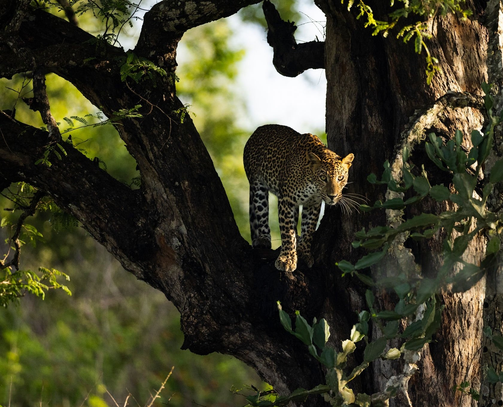

Renowned as Sri Lanka's top location for birdwatching and elephant sightings, nestled in an untamed coastal wilderness.
Formerly known as Yala East, Kumana National Park is a haven for nature lovers who prefer to escape the crowds of its western neighbor. It is most famous for the "Kumana Villu," a natural mangrove-swamp lake that attracts thousands of migratory birds during the peak season.
Beyond its birdlife, the park is home to leopards, golden jackals, wild boars, and massive herds of elephants that roam through the dry zone scrub forest and coastal plains. It's the ultimate destination for an untamed wildlife safari from Arugam Bay.
Back to Arugam Bay Hub